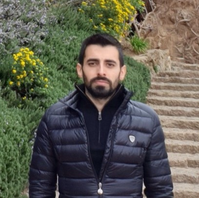

Burak Bastem
Bio
Burak Bastem is a software engineer specialized in high performance computing (HPC) and machine learning (ML). His experience in HPC involved developing GPU and CPU runtime libraries, optimizing multi-process communication and accelerating applications. Since 2018, he has been working on fraud detection with ML, a challenging problem due to its highly unbalanced nature.
Experience
Senior R&D Engineer
August 2020 - present
Yapı Kredi Teknoloji - Applied Data Science Team, İstanbul, Turkey
- Working on fraud focused machine learning projects: cross-channel fraud detection and employee fraud detection. Due to difficulty of the problem, projects are mainly research-focused and enriched with academic collaborations from respectable universities. The projects also involve HPC and big data solutions because of their data size.
- While studying, applying and developing state-of-the-art machine learning solutions in the research phase, implementing and integrating backend solutions in the release phase.
- Developed a proof-of-concept computer vision project about tracking social distance in bank branches from camera footage.
- Acting as employee representative in Occupational Health and Safety Board.
Expert R&D Engineer
July 2018 - August 2020
Yapı Kredi Teknoloji - Applied Data Science Team, İstanbul, Turkey
- Developed machine learning models for credit card fraud detection which involves providing solutions for extremely unbalanced class ratio and concept drift.
- Achieved better performance than proprietary model.
- Developed and integrated a pipeline to train and deploy models automatically and score credit card transactions in real-time (<10 ms).
- Represented the company and fulfilled the responsibilities as a data provider in European Data Incubator (EDI), a European Union H2020 project.
Research Assistant
June 2015 - April 2019
Koç University Parcorelab, İstanbul, Turkey
- Implemented TiDA-C++, tiling based multi-threaded programming model to increase cache performance with data locality and manage parallelism. TiDA achieves up to 2.10x speedup over OpenMP and resulted in publication at ISC’16.
- Designed and developed TiDA-acc. TiDA-acc is a tiling-based GPU programming model which manages distinct address spaces, successfully hides transfer latency between CPU and GPU, automatically generates GPU code, handles cases where there is no sufficient GPU memory and is published at ICPP’17.
- Integrated TiDA-acc to SMC, a combustion simulation consisting of approximately 10,000 lines of code, and presented an article and a poster about the study at BAŞARIM’17, Turkey’s national HPC conference.
- Developed a tiling-based high-level asynchronous programming model for GPU clusters using TiDA-acc. On top of what TiDA-acc offers, it utilizes all GPUs (and CPUs) in the system, overlaps any type of communication with computation and achieves good speedup. The study is published at HPCAsia’20.
Teaching Assistant
Sept 2016 - July 2018
Koç University, İstanbul, Turkey
- Assisted in teaching, supervision and assessment of Computer Architecture, Operating Systems and Parallel Programming courses.
- Received Teaching Assistant Training Certificate.
Research Assistant
July - Sept 2016
Lawrence Berkeley National Laboratory, Berkey, CA, US
- Studied existing GPU execution models and SMC implemented with AMReX, an AMR framework from Berkeley Lab.
- Implemented GPU version of SMC kernels.
- Collaborated on TiDA-acc design.
Software Engineering Intern
August 2015
Vestel R&D, İstanbul, Turkey
- Developed proof-of-concept applications for Android platform.
Software Engineering Intern
June - August 2014
Netaş, İstanbul, Turkey
- Analyzed and configured static code analysis tools to be integrated to continuous delivery project.
Education
Master of Science, Computer Science and Engineering
Sept 2016 - Apr 2019
Koç University, İstanbul, Turkey
Thesis: Tiling-Based Programming Model for GPU Clusters Targeting Structured Grids
GPA: 3.88 / 4.00
Bachelor of Science, Computer Engineering
Feb 2012 - Feb 2016
Koç University, İstanbul, Turkey
GPA: 3.18 / 4.00
Bachelor of Science, Industrial Engineering - Double Major
Feb 2015 - June 2016
Koç University, İstanbul, Turkey
GPA: 3.18 / 4.00
Track Certificate Program, Software Engineering
Feb 2014 - Feb 2016
Koç University, İstanbul, Turkey
GPA: 3.54 / 4.00
English Language Program
Sept 2010 - Jan 2012
Koç University, İstanbul, Turkey
Publications
Conference Proceedings
Burak Bastem, Didem Unat, “Tiling-Based Programming Model for Structured Grids on GPU Clusters”, International Conference on High Performance Computing in Asia-Pacific Region (HPCAsia), Fukuoka, Japan, January 2020
Burak Bastem, Didem Unat, Weiqun Zhang, Ann Almgren, John Shalf, “Overlapping Data Transfers with Computation on GPU with Tiles”, International Conference on Parallel Processing (ICPP), Bristol, United Kingdom, August 2017
Didem Unat, Tan Nguyen, Weiqun Zhang, Muhammed Nufail Farooqi, Burak Bastem, George Michelogiannakis, Ann Almgren, John Shalf, “TiDA: High-Level Programming Abstractions for Data Locality Management”, International Supercomputing Conference (ISC), Frankfurt, Germany, June 2016
Honors and Awards
Research Project Scholarship
Sept 2016 - July 2018
Prof. Didem Unat via TÜBİTAK
Half Merit Scholarship
2010 - 2016
Koç University, Istanbul, Turkey
Second Best Senior Project
2016
Koç University, Istanbul, Turkey
Dean's Honor Roll
Fall 2014, Fall 2015, Spring 2016
Koç University, Istanbul, Turkey
Vehbi Koç Scholar
Spring 2014, Spring 2015
Koç University, Istanbul, Turkey
Activities
Speaker, TRAI Meet-Up #45
May 2021
- Talked about fraud projects.
Speaker, EuroCC@Turkey HPC Winter School
Feb 2021
- Talked about HPC side of fraud projects.
Speaker, HPCAsia 2020
Jan 2020
- Presented the HPCAsia paper.
- Received Certificate of Attendence.
Speaker and Volunteer, BAŞARIM 2017
Sept 2017
- BAŞARIM is Turkey's National High Performance Computing Conference.
- Presented the BAŞARIM paper and poster.
- Volunteered in organizing and running the conference.
- Received Certificate of Attendence.
Speaker, ICPP 2017
August 2017
- Presented the ICPP paper.
- Received Certificate of Attendence.
Member, Koç University Computer Club
2010 - 2013
- Coordinated and participated in workshops and seminars.
Member, Koç University Marketing Club
2010 - 2011
- Participated in seminars and career talks with top executives of reputable companies.
- Received BusinessPort Certificate of Attendence.
Skills
Turkish: Native
English: Fluent
-
IELTS Academic: 7
-
KAPLAN International Certificate of Achievement
Summer 2012
New York City, NY, US
Primary
Python
C++
Java
SQL
Docker
MongoDB
Redis
Hive
Spark
Pandas
scikit-learn
TensorFlow
CUDA
OpenACC
MPI
OpenMP
Pthreads
Linux
Secondary